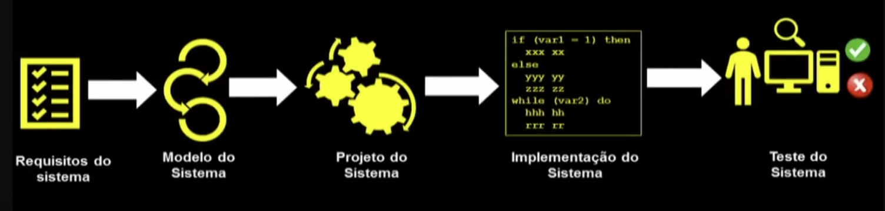
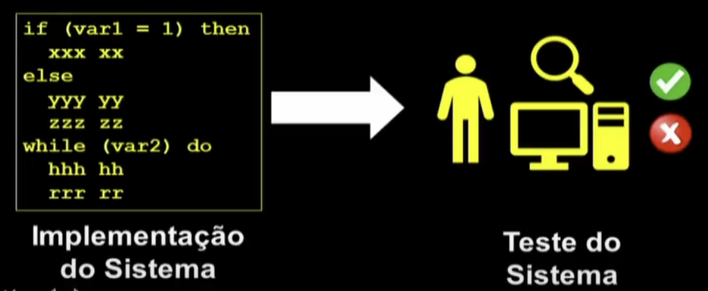
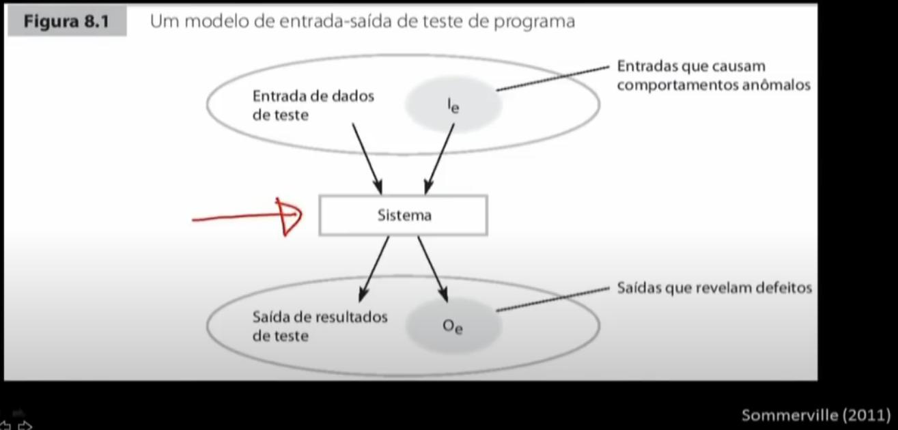
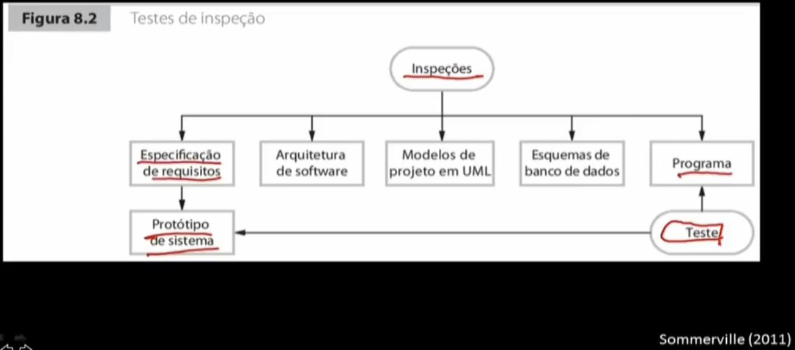
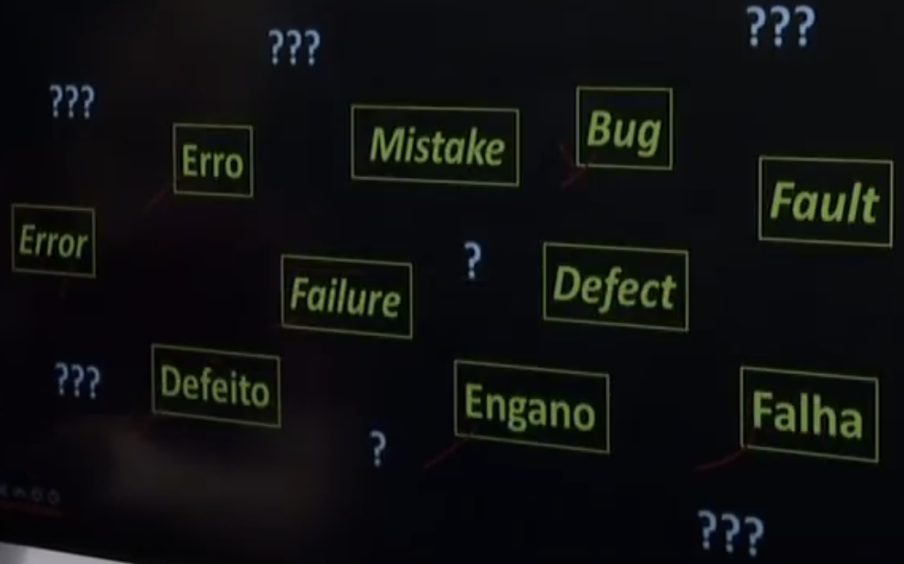

Disciplinas
ENGENHARIA DE SOFTWARE Concluído
Materiais
Vídeo 1 - Engenharia de Software - Aula 18 - Visão geral de teste de software sendProf.° ministrante: Marcelo Fantinato (UNIVESP).
Objetivo
- Visão geral de teste de software.
Processo de desenvolvimento.

Teste de software

- Demonstrar que o software está livre de defeitos?
- Encontrar a existência de falhas!
→ Os testes podem mostrar apenas a presença de defeitos, mas não a sua ausência.

- Validação de software:
- Estamos construindo o software certo?
- Verificação de software:
- Estamos construindo o software da maneira certa?
Atividades de V&V:
- Teste de software: atividade dinâmica de V&V
- Atividades estáticas de V&V:
- Inspeções
- Revisões


Engano ↓ → Mistake
Defeito ↓ → Defect | Fault | Bug
Erro ↓ → Error
Falha → Failure